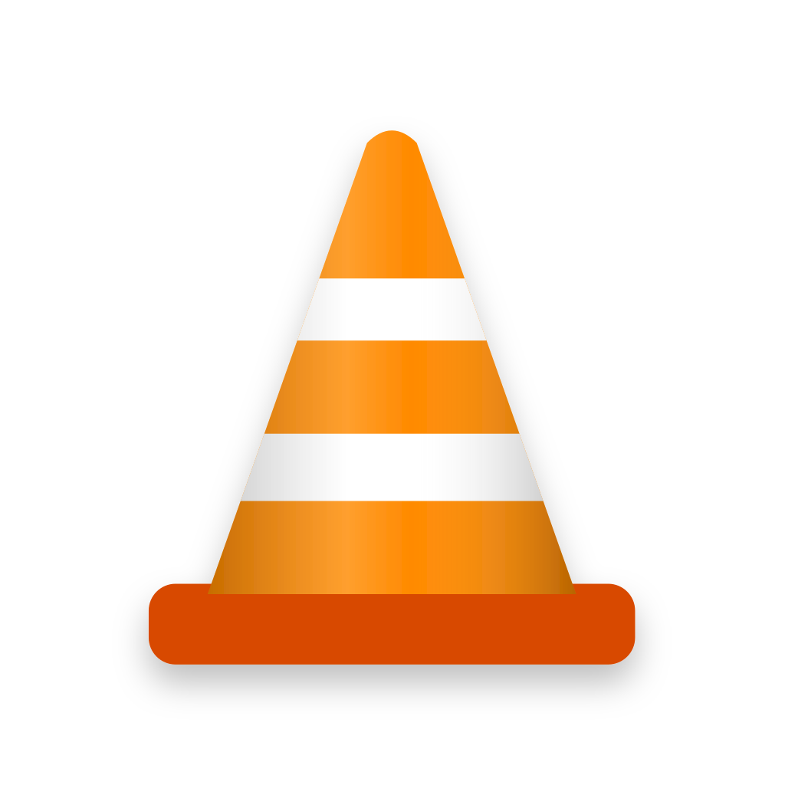

<!doctype html>
<html lang="en">
<head>
<meta charset="utf-8">
<meta name="viewport" content="width=device-width,initial-scale=1">
<title>VLC Icon Refresh — 50 Concepts</title>
<meta name="description" content="50 guideline-friendly VLC icon concepts for macOS, Windows, iOS, Android and Linux. Tap to vote.">
<link rel="icon" href="icons/macos/30.svg">
<style>
:root{--bg:#0E0E10;--panel:#17171A;--panel2:#1F1F23;--line:#2C2C31;--text:#F4F4F5;--mute:#A1A1AA;--or:#FF7A00;--or2:#FF9A3C;--r:18px}
*{box-sizing:border-box}html{-webkit-text-size-adjust:100%}
body{margin:0;background:var(--bg);color:var(--text);font:17px/1.55 -apple-system,BlinkMacSystemFont,"SF Pro Text","Inter","Segoe UI",Roboto,sans-serif}
a{color:var(--or2)}
.wrap{max-width:1280px;margin:0 auto;padding:0 28px}
header{padding:64px 0 28px}
.eyebrow{color:var(--or2);font-weight:600;letter-spacing:.08em;text-transform:uppercase;font-size:13px}
h1{font-size:clamp(34px,5vw,56px);line-height:1.05;margin:10px 0 16px;letter-spacing:-.02em}
.lede{color:var(--mute);max-width:760px;font-size:19px;margin:0}
.why{display:grid;grid-template-columns:repeat(auto-fit,minmax(240px,1fr));gap:14px;margin:34px 0 8px}
.why div{background:var(--panel);border:1px solid var(--line);border-radius:var(--r);padding:18px 20px}
.why b{display:block;margin-bottom:4px}.why span{color:var(--mute);font-size:15px}
/* toolbar */
.bar{position:sticky;top:0;z-index:20;background:rgba(14,14,16,.86);backdrop-filter:blur(14px);-webkit-backdrop-filter:blur(14px);border-bottom:1px solid var(--line)}
.bar .wrap{display:flex;gap:10px;align-items:center;padding-top:12px;padding-bottom:12px;flex-wrap:wrap}
.chip{border:1px solid var(--line);background:var(--panel);color:var(--text);border-radius:999px;padding:8px 15px;font:inherit;font-size:15px;cursor:pointer}
.chip[aria-pressed=true]{background:var(--or);border-color:var(--or);color:#111;font-weight:600}
.spacer{flex:1}
.sort{background:var(--panel);color:var(--text);border:1px solid var(--line);border-radius:10px;padding:8px 10px;font:inherit;font-size:15px}
.status{font-size:13px;color:var(--mute)}
/* grid */
.grid{display:grid;grid-template-columns:repeat(auto-fill,minmax(260px,1fr));gap:18px;padding:28px 0 60px}
.card{background:var(--panel);border:1px solid var(--line);border-radius:22px;padding:20px;display:flex;flex-direction:column;gap:12px;transition:border-color .2s,transform .2s;position:relative}
.card:hover{border-color:#3A3A41}
.card.voted{border-color:var(--or);box-shadow:0 0 0 1px var(--or) inset}
.art{aspect-ratio:1;border-radius:16px;background:radial-gradient(120% 90% at 50% 0%,#2A2A30,#141417);display:grid;place-items:center;cursor:pointer;position:relative;overflow:hidden}
.art img{width:72%;height:72%;transition:transform .35s cubic-bezier(.2,.8,.2,1)}
.art:hover img{transform:scale(1.05)}
.art .num{position:absolute;top:12px;left:14px;font-size:13px;color:var(--mute);font-variant-numeric:tabular-nums}
.art .heart{position:absolute;top:10px;right:12px;font-size:13px;background:var(--or);color:#111;border-radius:999px;padding:3px 10px;font-weight:700;opacity:0;transform:scale(.8);transition:.2s}
.card.voted .heart{opacity:1;transform:none}
.sizes{display:flex;gap:10px;align-items:flex-end;justify-content:center;padding:6px 0 2px}
.sizes img{display:block}
.meta h3{margin:0;font-size:20px;letter-spacing:-.01em}
.meta p{margin:4px 0 0;color:var(--mute);font-size:15px;min-height:46px}
.tag{font-size:12px;color:var(--or2);border:1px solid #4A2F18;border-radius:999px;padding:2px 9px;margin-left:6px;vertical-align:3px}
.row{display:flex;gap:8px}
.btn{flex:1;border:1px solid var(--line);background:var(--panel2);color:var(--text);border-radius:12px;padding:11px 12px;font:inherit;font-size:15px;font-weight:600;cursor:pointer}
.btn:hover{border-color:#44444B}
.btn.vote{background:var(--or);border-color:var(--or);color:#111}
.card.voted .btn.vote{background:transparent;color:var(--or2)}
.count{font-variant-numeric:tabular-nums}
.bar-meter{height:4px;border-radius:4px;background:#26262B;overflow:hidden}
.bar-meter i{display:block;height:100%;background:var(--or);width:0;transition:width .5s}
/* preview */
dialog{border:0;padding:0;background:transparent;max-width:min(1180px,96vw);width:100%;color:var(--text)}
dialog::backdrop{background:rgba(0,0,0,.72);backdrop-filter:blur(6px)}
.pv{background:var(--panel);border:1px solid var(--line);border-radius:26px;overflow:hidden}
.pv-head{display:flex;align-items:center;gap:14px;padding:18px 22px;border-bottom:1px solid var(--line);flex-wrap:wrap}
.pv-head img{width:52px;height:52px}
.pv-head h2{margin:0;font-size:22px}.pv-head p{margin:0;color:var(--mute);font-size:14px}
.tabs{display:flex;gap:6px;padding:14px 22px 0;flex-wrap:wrap}
.pv-body{padding:18px 22px 24px}
.x{margin-left:auto;background:var(--panel2);border:1px solid var(--line);color:var(--text);width:40px;height:40px;border-radius:50%;font-size:20px;cursor:pointer}
.nav{background:var(--panel2);border:1px solid var(--line);color:var(--text);height:40px;padding:0 14px;border-radius:12px;cursor:pointer;font:inherit;font-size:15px}
.dl{display:flex;gap:10px;flex-wrap:wrap;margin-top:14px;font-size:14px;color:var(--mute)}
.dl a{border:1px solid var(--line);border-radius:10px;padding:6px 10px;text-decoration:none}
/* ===== mockups ===== */
.mock{position:relative;border-radius:18px;overflow:hidden;width:100%;aspect-ratio:16/8;min-height:300px}
.lbl{font-size:13px;color:var(--mute);margin:0 0 8px}
/* macOS */
.mac{background:radial-gradient(120% 80% at 20% 10%,#6F7BF7 0,#3A2CB8 40%,#1B1060 75%,#0B0730 100%)}
.mac .menubar{position:absolute;inset:0 0 auto 0;height:28px;background:rgba(255,255,255,.12);backdrop-filter:blur(20px);display:flex;align-items:center;gap:18px;padding:0 16px;font-size:13px;color:#fff;font-weight:500}
.mac .menubar b{font-weight:700}
.mac .dock{position:absolute;left:50%;bottom:10px;transform:translateX(-50%);display:flex;align-items:flex-end;gap:6px;padding:7px 9px;border-radius:24px;background:rgba(255,255,255,.18);border:1px solid rgba(255,255,255,.28);backdrop-filter:blur(24px) saturate(160%);-webkit-backdrop-filter:blur(24px) saturate(160%);box-shadow:0 10px 40px rgba(0,0,0,.35)}
.mac .dock .it{position:relative;width:64px;height:64px;transition:width .18s,height .18s,margin .18s}
.mac .dock .it img{width:100%;height:100%;display:block}
.mac .dock .it.run:after{content:"";position:absolute;left:50%;bottom:-6px;width:4px;height:4px;margin-left:-2px;border-radius:50%;background:rgba(255,255,255,.85)}
.mac .dock .sep{width:1px;align-self:stretch;margin:6px 4px;background:rgba(255,255,255,.35)}
.mac .dock .it.hl{width:84px;height:84px;margin-top:-20px}
.mac .tip{position:absolute;bottom:112px;left:50%;transform:translateX(-50%);background:rgba(30,30,35,.8);color:#fff;font-size:13px;padding:4px 10px;border-radius:7px;border:1px solid rgba(255,255,255,.15)}
/* windows */
.win{background:radial-gradient(90% 90% at 50% 110%,#1A7BDB 0,#0B3A8A 40%,#07153A 100%)}
.win .tb{position:absolute;inset:auto 0 0 0;height:54px;background:rgba(32,32,36,.82);backdrop-filter:blur(30px);border-top:1px solid rgba(255,255,255,.08);display:flex;align-items:center;justify-content:center;gap:4px}
.win .ti{width:46px;height:46px;border-radius:6px;display:grid;place-items:center;position:relative}
.win .ti img{width:30px;height:30px}
.win .ti.act{background:rgba(255,255,255,.09)}
.win .ti.act:after{content:"";position:absolute;bottom:2px;left:50%;width:16px;height:3px;margin-left:-8px;border-radius:3px;background:#60CDFF}
.win .ti.run:after{content:"";position:absolute;bottom:2px;left:50%;width:6px;height:3px;margin-left:-3px;border-radius:3px;background:#9A9A9A}
.win .clock{position:absolute;right:14px;bottom:8px;color:#fff;font-size:12px;text-align:right;line-height:1.35}
.win .desk{position:absolute;left:22px;top:20px;display:grid;gap:18px}
.win .desk div{width:78px;text-align:center;color:#fff;font-size:12px;text-shadow:0 1px 2px #000}
.win .desk img{width:48px;height:48px;display:block;margin:0 auto 4px}
/* iOS */
.phones{display:flex;gap:26px;justify-content:center;flex-wrap:wrap;padding:6px 0}
.ios,.andr{width:300px;height:620px;border-radius:48px;position:relative;overflow:hidden;border:10px solid #0A0A0A;box-shadow:0 0 0 2px #2d2d33,0 30px 60px rgba(0,0,0,.5)}
.ios{background:linear-gradient(160deg,#FF9E6B 0,#E8577E 40%,#5B3FD6 100%)}
.ios .isl{position:absolute;top:10px;left:50%;width:96px;height:28px;margin-left:-48px;background:#000;border-radius:20px}
.ios .sb{position:absolute;top:14px;left:28px;right:24px;display:flex;justify-content:space-between;color:#fff;font-size:14px;font-weight:600}
.ios .home{position:absolute;top:66px;left:18px;right:18px;display:grid;grid-template-columns:repeat(4,1fr);row-gap:18px}
.ios .app{text-align:center;color:#fff;font-size:11px;text-shadow:0 1px 2px rgba(0,0,0,.3)}
.ios .app img{width:58px;height:58px;display:block;margin:0 auto 5px}
.ios .dockbar{position:absolute;left:12px;right:12px;bottom:12px;height:84px;border-radius:32px;background:rgba(255,255,255,.25);backdrop-filter:blur(20px);display:flex;justify-content:space-around;align-items:center}
.ios .dockbar img{width:58px;height:58px}
/* Android */
.andr{background:linear-gradient(180deg,#0F3D3A 0,#1E6F5C 50%,#E7D7B0 100%);border-radius:40px}
.andr .sb{position:absolute;top:12px;left:24px;right:22px;display:flex;justify-content:space-between;color:#fff;font-size:13px}
.andr .clockw{position:absolute;top:60px;left:26px;color:#fff;font-size:54px;font-weight:300;line-height:1}
.andr .clockw small{display:block;font-size:14px;opacity:.85;margin-top:6px}
.andr .home{position:absolute;left:14px;right:14px;bottom:150px;display:grid;grid-template-columns:repeat(4,1fr);row-gap:16px}
.andr .app{text-align:center;color:#fff;font-size:11px}
.andr .app img{width:56px;height:56px;display:block;margin:0 auto 5px}
.andr .hot{position:absolute;left:14px;right:14px;bottom:64px;display:flex;justify-content:space-around}
.andr .hot img{width:56px;height:56px}
.andr .search{position:absolute;left:22px;right:22px;bottom:18px;height:40px;border-radius:22px;background:rgba(255,255,255,.85)}
/* Linux GNOME */
.lnx{background:linear-gradient(135deg,#241F31 0,#3D3846 45%,#613583 100%)}
.lnx .top{position:absolute;inset:0 0 auto 0;height:28px;background:#000;color:#fff;font-size:13px;display:flex;align-items:center;justify-content:center;font-weight:600}
.lnx .top .act{position:absolute;left:14px;display:flex;gap:4px}
.lnx .top .act i{display:block;width:8px;height:8px;border-radius:5px;background:#fff}.lnx .top .act i:first-child{width:22px}
.lnx .dash{position:absolute;left:50%;bottom:14px;transform:translateX(-50%);display:flex;gap:8px;padding:10px;border-radius:24px;background:rgba(40,40,46,.85)}
.lnx .dash .it{width:58px;height:58px;position:relative;border-radius:14px;display:grid;place-items:center}
.lnx .dash .it.act{background:rgba(255,255,255,.12)}
.lnx .dash .it img{width:48px;height:48px}
.lnx .dash .it.run:after{content:"";position:absolute;bottom:1px;left:50%;width:6px;height:4px;margin-left:-3px;border-radius:3px;background:#fff}
.lnx .win2{position:absolute;left:12%;top:16%;width:52%;height:52%;border-radius:12px;background:#242424;box-shadow:0 20px 40px rgba(0,0,0,.5);overflow:hidden}
.lnx .win2 .hb{height:40px;background:#303030;display:flex;align-items:center;padding:0 12px;gap:10px;color:#fff;font-size:13px}
.lnx .win2 .hb img{width:22px;height:22px}
.lnx .win2 .vid{position:absolute;inset:40px 0 0 0;background:linear-gradient(135deg,#FF8A00,#7A2A00);display:grid;place-items:center;color:#fff;font-size:40px}
/* compare */
.cmp{display:grid;grid-template-columns:1fr 1fr;gap:14px}
.cmp .mock{aspect-ratio:16/6;min-height:200px}
.cap{font-size:14px;color:var(--mute);margin:8px 0 0}
section.all{padding:10px 0 50px}
section.all h2{font-size:28px;margin:0 0 6px}
.alldock{overflow-x:auto;padding-bottom:6px}
.alldock .mock{min-width:760px;aspect-ratio:auto;height:330px}
.alldock .dock{gap:6px;flex-wrap:wrap;justify-content:center;width:min(94%,1080px)}.alldock .dock .it{width:44px;height:44px}.alldock .dock .it.hl{width:44px;height:44px;margin:0}
footer{border-top:1px solid var(--line);padding:28px 0 60px;color:var(--mute);font-size:14px}
.toast{position:fixed;left:50%;bottom:26px;transform:translateX(-50%) translateY(30px);background:#fff;color:#111;padding:10px 18px;border-radius:999px;font-weight:600;opacity:0;transition:.25s;z-index:99;pointer-events:none}
.toast.on{opacity:1;transform:translateX(-50%)}
@media (max-width:760px){.wrap{padding:0 16px}.bar .wrap{flex-wrap:nowrap;overflow-x:auto}.chip,.sort{flex:0 0 auto}.status{display:none}header{padding-top:36px}.why{grid-template-columns:1fr 1fr;gap:10px}.why div{padding:14px}.why span{font-size:13px}.grid{grid-template-columns:1fr 1fr;gap:12px}.card{padding:12px;border-radius:18px}.sizes{display:none}.meta p{display:none}.meta h3{font-size:16px}.tag{display:none}.row{flex-direction:column}.btn{padding:9px}.cmp{grid-template-columns:1fr}.mock{aspect-ratio:auto;height:320px}.mac .dock .it{width:42px;height:42px}.mac .dock .it.hl{width:56px;height:56px;margin-top:-14px}.mac .tip{bottom:82px}}
/* screenshot mode */
body.shot{background:#0E0E10}
body.shot .shotwrap{width:1600px;padding:36px;display:grid;grid-template-columns:1fr 1fr;gap:26px}
body.shot .shotwrap .full{grid-column:1/-1}
body.shot h2{margin:0;font-size:30px}
</style>
</head>
<body>
<div id="app"></div>
<div class="toast" id="toast"></div>
<script>
// FTP/PHP hosting -> vote.php · Vercel -> /api/votes · Perplexity preview -> rewritten proxy placeholder.
const PROXY = '__PORT_8787__';
// Override with window.VOTE_API if you host the vote endpoint elsewhere.
const API = window.VOTE_API || (!PROXY.startsWith('__') ? PROXY + '/api/votes' : /vercel\.app$/.test(location.hostname) ? '/api/votes' : 'vote.php');
const params = new URLSearchParams(location.search);
const $ = (s, el = document) => el.querySelector(s);
const esc = s => String(s).replace(/[&<>"]/g, c => ({'&':'&amp;','<':'&lt;','>':'&gt;','"':'&quot;'}[c]));
// Voter id lives in a cookie (falls back to memory); the server remembers which icons this voter picked.
function getCookie(k){try{return (document.cookie.match('(?:^|; )'+k+'=([^;]*)')||[])[1]||null}catch(e){return null}}
function setCookie(k,v){try{document.cookie=k+'='+v+'; max-age=31536000; path=/; SameSite=Lax'}catch(e){}}
let ICONS = [], COUNTS = {}, MINE = new Set(), ONLINE = false;
let VOTER = getCookie('vlcvoter');
if (!VOTER) { VOTER = crypto.getRandomValues(new Uint32Array(4)).join('-'); setCookie('vlcvoter', VOTER); }

/* ---------- neighbour placeholder apps (generic, non-trademark) ---------- */
const SQ = (()=>{let p=[];for(let i=0;i<120;i++){const t=2*Math.PI*i/120,c=Math.cos(t),s=Math.sin(t);p.push((50+50*Math.sign(c)*Math.abs(c)**.4).toFixed(1)+','+(50+50*Math.sign(s)*Math.abs(s)**.4).toFixed(1))}return 'M'+p.join('L')+'Z'})();
const GLYPH = {
  folder:'<path d="M24 34h20l6 6h26v30H24z" fill="#fff" opacity=".95"/>',
  term:'<path d="M28 38l12 10-12 10" stroke="#fff" stroke-width="6" fill="none" stroke-linecap="round" stroke-linejoin="round"/><path d="M46 62h24" stroke="#fff" stroke-width="6" stroke-linecap="round"/>',
  gear:'<circle cx="50" cy="50" r="18" fill="none" stroke="#fff" stroke-width="8" stroke-dasharray="7 4.3"/><circle cx="50" cy="50" r="8" fill="#fff"/>',
  mail:'<rect x="24" y="32" width="52" height="36" rx="5" fill="#fff"/><path d="M24 34l26 20 26-20" stroke="#2A7BF6" stroke-width="4" fill="none"/>',
  music:'<path d="M42 30v30a8 8 0 1 1-6-7.7V36l30-7v26a8 8 0 1 1-6-7.7V34z" fill="#fff"/>',
  globe:'<circle cx="50" cy="50" r="24" fill="none" stroke="#fff" stroke-width="5"/><path d="M26 50h48M50 26c-12 14-12 34 0 48M50 26c12 14 12 34 0 48" stroke="#fff" stroke-width="4" fill="none"/>',
  note:'<rect x="30" y="24" width="40" height="52" rx="5" fill="#fff"/><path d="M36 38h28M36 48h28M36 58h18" stroke="#E5B400" stroke-width="4"/>',
  photo:'<g opacity=".95"><circle cx="50" cy="38" r="11" fill="#FFCC00"/><circle cx="38" cy="54" r="11" fill="#34C759"/><circle cx="62" cy="54" r="11" fill="#FF2D55"/></g>',
  chat:'<path d="M26 40a20 16 0 1 1 10 14l-10 6 3-10a20 16 0 0 1-3-10z" fill="#fff"/>',
  cal:'<rect x="28" y="28" width="44" height="44" rx="6" fill="#fff"/><text x="50" y="62" text-anchor="middle" font-size="24" font-family="Arial" font-weight="700" fill="#E5484D">30</text>',
  cam:'<rect x="24" y="36" width="52" height="34" rx="7" fill="#fff"/><circle cx="50" cy="53" r="10" fill="#555"/>',
  code:'<path d="M40 36L28 50l12 14M60 36l12 14-12 14" stroke="#fff" stroke-width="6" fill="none" stroke-linecap="round"/>',
  trash:'<path d="M34 36h32l-3 36H37z" fill="#fff" opacity=".85"/><rect x="30" y="30" width="40" height="6" rx="2" fill="#fff"/>'
};
const APPS = [['Files','#3AA0FF','#1E6FE8','folder'],['Browser','#4FC3F7','#1976D2','globe'],['Mail','#5AB0FF','#2A7BF6','mail'],['Music','#FF5A7A','#E0245E','music'],['Notes','#FFE27A','#F5C400','note'],['Photos','#FFFFFF','#EDEDED','photo'],['Messages','#5CE27A','#1DB954','chat'],['Calendar','#FFFFFF','#F0F0F0','cal'],['Terminal','#3A3A3A','#111111','term'],['Settings','#9BA0A8','#5B616B','gear'],['Code','#5A8DEE','#2F57C5','code'],['Camera','#A0A0A8','#55555C','cam']];
function tileURI(app, shape){
  const [n,c1,c2,g]=app; const clip = shape==='circle' ? '<circle cx="50" cy="50" r="50"/>' : shape==='rrect' ? '<rect x="10" y="10" width="80" height="80" rx="9"/>' : shape==='full' ? `<path d="${SQ}"/>` : `<path d="${SQ}" transform="translate(10 10) scale(.8)"/>`;
  const svg=`<svg xmlns="http://www.w3.org/2000/svg" viewBox="0 0 100 100"><defs><linearGradient id="g" x1="0" y1="0" x2="0" y2="1"><stop offset="0" stop-color="${c1}"/><stop offset="1" stop-color="${c2}"/></linearGradient><clipPath id="m">${clip}</clipPath></defs><g clip-path="url(#m)"><rect width="100" height="100" fill="url(#g)"/><g ${shape==='mac'||shape==='rrect'?'transform="translate(10 10) scale(.8)"':''}>${GLYPH[g]}</g></g></svg>`;
  return 'data:image/svg+xml,'+encodeURIComponent(svg);
}
const T = (i, s) => ``;
const IC = (id, plat) => `icons/${plat}/${id}.svg`;

/* ---------- mockups ---------- */
function macDock(id, {current=false, label=true}={}){
  const vlc = current ? `<div class="it hl run"></div>` : `<div class="it hl run"></div>`;
  return `<div class="mock mac"><div class="menubar"><span>&#9679;</span><b>VLC</b><span>File</span><span>Edit</span><span>View</span><span>Playback</span><span>Audio</span><span>Video</span><span style="margin-left:auto">Wed 30 Sep 00:32</span></div>
  ${label?'<div class="tip">VLC media player</div>':''}
  <div class="dock"><div class="it run">${T(0,'mac')}</div><div class="it run">${T(1,'mac')}</div><div class="it">${T(2,'mac')}</div><div class="it">${T(3,'mac')}</div>${vlc}<div class="it">${T(4,'mac')}</div><div class="it run">${T(8,'mac')}</div><div class="it">${T(9,'mac')}</div><div class="sep"></div><div class="it">${T(0,'mac').replace('alt=""','alt="" style="filter:saturate(0) brightness(1.4)"')}</div></div></div>`;
}
function winBar(id){
  return `<div class="mock win"><div class="desk"><div>VLC media player</div><div>${T(0,'rrect').replace('</div>
  <div class="tb"><div class="ti"><svg width="22" height="22" viewBox="0 0 22 22"><rect width="10" height="10" rx="1.5" fill="#4CC2FF"/><rect x="12" width="10" height="10" rx="1.5" fill="#4CC2FF"/><rect y="12" width="10" height="10" rx="1.5" fill="#4CC2FF"/><rect x="12" y="12" width="10" height="10" rx="1.5" fill="#4CC2FF"/></svg></div>
  <div class="ti"><svg width="22" height="22" viewBox="0 0 22 22"><circle cx="9" cy="9" r="6.5" stroke="#fff" stroke-width="2" fill="none"/><path d="M14 14l5 5" stroke="#fff" stroke-width="2" stroke-linecap="round"/></svg></div>
  <div class="ti run">${T(0,'rrect')}</div><div class="ti run">${T(1,'rrect')}</div><div class="ti act"></div><div class="ti">${T(2,'rrect')}</div><div class="ti">${T(10,'rrect')}</div><div class="ti">${T(9,'rrect')}</div></div>
  <div class="clock">00:32<br>30/09/2026</div></div>`.replace(/<div class="ti( run)?">(]*>)<\/div>/g,(m,r,img)=>`<div class="ti${r||''}">${img.replace('`);
}
function iosPhone(id){
  const grid=[3,5,7,11,1,4,6,'V',2,9,10,0].map((a,k)=>a==='V'?`<div class="app">VLC</div>`:`<div class="app">${T(a,'full')}${APPS[a][0]}</div>`).join('');
  return `<div class="ios"><div class="isl"></div><div class="sb"><span>00:32</span><span>&#9679;&#9679;&#9679; 5G</span></div><div class="home">${grid}</div>
  <div class="dockbar">${T(6,'full')}${T(1,'full')}${T(2,'full')}${T(3,'full')}</div></div>`.replace(/a==='V'?`<div class="app">VLC</div>`:`<div class="app">${T(a,'circle')}${APPS[a][0]}</div>`).join('');
  return `<div class="andr"><div class="sb"><span>00:32</span><span>5G &#9646;</span></div><div class="clockw">00:32<small>Wed, Sep 30</small></div><div class="home">${grid}</div>
  <div class="hot">${T(6,'circle')}${T(1,'circle')}${T(11,'circle')}${T(2,'circle')}</div><div class="search"></div></div>`.replace(/<div class="top"><div class="act"><i></i><i></i><i></i></div>Wed 00:32</div>
  <div class="win2"><div class="hb">VLC media player</div><div class="vid">&#9654;</div></div>
  <div class="dash"><div class="it run">${T(0,'rrect')}</div><div class="it run">${T(1,'rrect')}</div><div class="it">${T(2,'rrect')}</div><div class="it act run"></div><div class="it">${T(8,'rrect')}</div><div class="it">${T(10,'rrect')}</div><div class="it">${T(9,'rrect')}</div></div></div>`.replace(/<div class="it( run)?">(]*>)/g,(m,r,img)=>`<div class="it${r||''}">${img.replace('macOS Tahoe dock · 824 px squircle body on the 1024 grid, drop shadow, hovered state</p>${macDock(id)}`;
  if(p==='compare') return `<div class="cmp"><div>${macDock(id,{current:true,label:false})}<p class="cap">Today: cone with no plate, so it floats smaller and off-grid next to other apps.</p></div><div>${macDock(id,{label:false})}<p class="cap">Concept #${id}: same optical size and plate as its neighbours.</p></div></div>`;
  if(p==='windows') return `<p class="lbl">Windows 11 taskbar (active) + desktop shortcut</p>${winBar(id)}`;
  if(p==='phones') return `<p class="lbl">iOS home screen (system squircle mask) · Android adaptive icon (circle mask)</p><div class="phones">${iosPhone(id)}${andPhone(id)}</div>`;
  if(p==='linux') return `<p class="lbl">GNOME dash + window header bar</p>${lnxDash(id)}`;
}

/* ---------- votes ---------- */
async function loadCounts(){
  try{ const r = await fetch(API+'?voter='+encodeURIComponent(VOTER)+'&t='+Date.now(),{cache:'no-store'}); if(!r.ok) throw 0; const j = await r.json(); COUNTS = j.counts||{}; if(j.mine) MINE=new Set(j.mine); ONLINE = true; }
  catch(e){ ONLINE = false; COUNTS = {}; MINE.forEach(id=>COUNTS[id]=1); }
  const s=$('#status'); if(s) s.textContent = ONLINE ? `Live tally · ${Object.values(COUNTS).reduce((a,b)=>a+b,0)} votes` : 'Offline: votes kept for this visit only';
}
async function toggleVote(id){
  const on = !MINE.has(id);
  on ? MINE.add(id) : MINE.delete(id);
  COUNTS[id] = Math.max(0,(COUNTS[id]||0)+(on?1:-1));
  renderCards(); toast(on?`Voted for #${id}`:`Vote removed from #${id}`);
  try{ const r = await fetch(API,{method:'POST',headers:{'Content-Type':'application/json'},body:JSON.stringify({id,voter:VOTER,action:on?'add':'remove'})}); if(r.ok){const j=await r.json(); COUNTS=j.counts||COUNTS; if(j.mine) MINE=new Set(j.mine); ONLINE=true;} }catch(e){}
  renderCards(); const s=$('#status'); if(s&&ONLINE) s.textContent=`Live tally · ${Object.values(COUNTS).reduce((a,b)=>a+b,0)} votes`;
}
let tt; function toast(m){const t=$('#toast');t.textContent=m;t.classList.add('on');clearTimeout(tt);tt=setTimeout(()=>t.classList.remove('on'),1600)}

/* ---------- UI ---------- */
let FILTER='All', SORT='num';
function renderCards(){
  const max = Math.max(1,...Object.values(COUNTS));
  let list = ICONS.filter(d=>FILTER==='All'||d.tag===FILTER||(FILTER==='My votes'&&MINE.has(d.id)));
  if(SORT==='votes') list=[...list].sort((a,b)=>(COUNTS[b.id]||0)-(COUNTS[a.id]||0));
  $('#grid').innerHTML = list.map(d=>{const c=COUNTS[d.id]||0;return `
  <article class="card ${MINE.has(d.id)?'voted':''}" data-open="${d.id}" style="cursor:pointer">
    <div class="art" data-open="${d.id}" title="Open preview"><span class="num">#${d.id}</span><span class="heart">Your vote</span></div>
    <div class="sizes"></div>
    <div class="meta"><h3>${esc(d.name)}<span class="tag">${d.tag}</span></h3><p>${esc(d.desc)}</p></div>
    <div class="bar-meter"><i style="width:${c/max*100}%"></i></div>
    <div class="row"><button class="btn vote" data-vote="${d.id}">${MINE.has(d.id)?'Voted':'Vote'} · <span class="count">${c}</span></button><button class="btn" data-open="${d.id}">Preview docks</button></div>
  </article>`}).join('') || '<p style="color:var(--mute)">No votes yet. Open any icon to vote.</p>';
  renderAll();
}
function renderAll(){
  const el=$('#alldock'); if(!el) return;
  const top=[...ICONS].sort((a,b)=>(COUNTS[b.id]||0)-(COUNTS[a.id]||0)||a.id.localeCompare(b.id));
  el.innerHTML=`<div class="mock mac"><div class="menubar"><b>Finder</b><span>All 50 concepts, sorted by votes</span></div><div class="dock">${top.map(d=>`<div class="it" title="#${d.id} ${esc(d.name)}"></div>`).join('')}</div></div>`;
}
let CUR=null, PLAT='macos';
function openPreview(id, plat){
  CUR=id; PLAT=plat||PLAT; const d=ICONS.find(x=>x.id===id); const dlg=$('#pv');
  dlg.innerHTML=`<div class="pv"><div class="pv-head"><div><h2>#${id} ${esc(d.name)}</h2><p>${esc(d.desc)}</p></div>
  <button class="nav" data-step="-1" aria-label="Previous">&larr;</button><button class="nav" data-step="1" aria-label="Next">&rarr;</button>
  <button class="btn vote" style="flex:0 0 auto" data-vote="${id}">${MINE.has(id)?'Voted · tap to undo':'Vote for this'} (${COUNTS[id]||0})</button><button class="x" data-close aria-label="Close">&times;</button></div>
  <div class="tabs">${PLATS.map(([k,v])=>`<button class="chip" aria-pressed="${k===PLAT}" data-plat="${k}">${v}</button>`).join('')}</div>
  <div class="pv-body">${platHTML(id,PLAT)}<div class="dl">Download: ${['macos','ios','android','windows','linux','layers-bg','layers-fg'].map(p=>`<a href="${IC(id,p)}" download="vlc-${id}-${p}.svg">${p}.svg</a>`).join('')}<a href="shots/${id}.png" target="_blank">Screenshot PNG</a></div></div></div>`;
  if(!dlg.open) dlg.showModal();
}
document.addEventListener('click',e=>{
  const v=e.target.closest('[data-vote]'); if(v){ toggleVote(v.dataset.vote); if($('#pv').open) openPreview(CUR); return; }
  const o=e.target.closest('[data-open]'); if(o) return openPreview(o.dataset.open);
  const p=e.target.closest('[data-plat]'); if(p) return openPreview(CUR,p.dataset.plat);
  const s=e.target.closest('[data-step]'); if(s){const i=ICONS.findIndex(x=>x.id===CUR);return openPreview(ICONS[(i+ +s.dataset.step+ICONS.length)%ICONS.length].id)}
  if(e.target.closest('[data-close]')||e.target.id==='pv') $('#pv').close();
  const f=e.target.closest('[data-filter]'); if(f){FILTER=f.dataset.filter;document.querySelectorAll('[data-filter]').forEach(x=>x.setAttribute('aria-pressed',x===f));renderCards()}
});
document.addEventListener('keydown',e=>{if(!$('#pv').open)return;if(e.key==='ArrowRight')$('[data-step="1"]').click();if(e.key==='ArrowLeft')$('[data-step="-1"]').click()});

async function main(){
  ICONS = await (await fetch('icons.json')).json();
  if(params.get('shot')){ // screenshot mode used to export PNGs
    const id=params.get('shot'), d=ICONS.find(x=>x.id===id); document.body.className='shot';
    $('#app').innerHTML=`<div class="shotwrap"><div class="full" style="display:flex;gap:18px;align-items:center"><div><h2>VLC concept #${id} — ${esc(d.name)}</h2><p style="color:#A1A1AA;margin:4px 0 0">${esc(d.desc)}</p></div></div>
    <div class="full">${platHTML(id,'compare')}</div><div>${platHTML(id,'windows')}</div><div>${platHTML(id,'linux')}</div><div class="full">${platHTML(id,'phones')}</div></div>`;
    return;
  }
  const tags=['All',...new Set(ICONS.map(d=>d.tag)),'My votes'];
  $('#app').innerHTML=`<header class="wrap"><div class="eyebrow">Unofficial redesign study</div><h1>A VLC icon that feels at home on macOS.</h1>
  <p class="lede">VLC's current Mac icon is a bare cone with no plate, so it sits smaller and off-grid next to every other app in the dock. Here are 50 concepts that follow Apple's icon grid, and adapt to Windows, iOS, Android and Linux. Tap any icon to see it in every dock, then vote from there. Tap Vote again to undo.</p>
  <div class="why"><div><b>Squircle plate</b><span>824 px continuous-corner body on a 1024 canvas, like every native app.</span></div><div><b>Optical balance</b><span>The cone fills ~60% of the plate so it matches its neighbours' visual weight.</span></div><div><b>Depth, not clutter</b><span>Soft top-lit gradient and one drop shadow, per Tahoe's layered-icon guidance.</span></div><div><b>One source, five masks</b><span>Each concept is split into background + foreground layers for every platform mask.</span></div></div></header>
  <div class="bar"><div class="wrap">${tags.map(t=>`<button class="chip" data-filter="${t}" aria-pressed="${t==='All'}">${t}</button>`).join('')}<span class="spacer"></span><span class="status" id="status">Loading votes…</span>
  <select class="sort" id="sort" aria-label="Sort"><option value="num">Sort: number</option><option value="votes">Sort: most votes</option></select></div></div>
  <main class="wrap"><div class="grid" id="grid"></div>
  <section class="all"><h2>All 50 in one dock</h2><p style="color:var(--mute);margin:0 0 14px">A quick side-by-side at real dock scale, ordered by current votes.</p><div class="alldock" id="alldock"></div></section></main>
  <footer class="wrap">Concept work, not affiliated with VideoLAN. The VLC cone is a trademark of VideoLAN. Every icon ships as SVG layers per platform; screenshots are in <code>/shots</code>.</footer>
  <dialog id="pv"></dialog>`;
  $('#sort').onchange=e=>{SORT=e.target.value;renderCards()};
  renderCards(); await loadCounts(); renderCards();
  setInterval(async()=>{await loadCounts();renderCards()},20000);
}
main();
</script>
</body>
</html>
